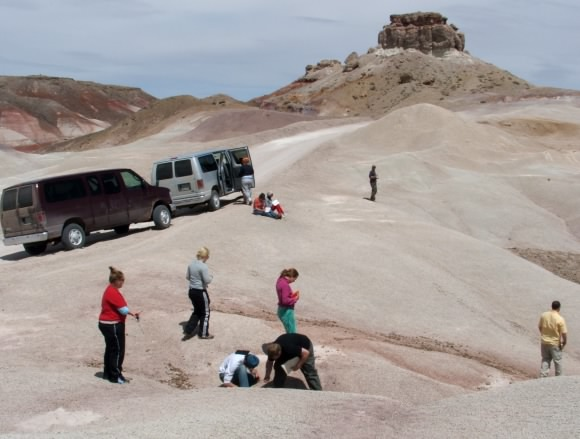

Above: Panoramic view of Bryce Canyon from near Sunrise
Overlook
|
Above: Panoramic view of Ubehebe Crater with students on
high side of crater rim
|
|
Students return from Little Hebe
|
Group photo in the dunes
|
A student prays for mercy in the dunes
|
Above: Panoramic view of the Cerbat Mountains showing
our camp at Packsaddle Recreation site
|
Students at Plateau Point, perched above the inner gorge
of the Grand Canyon
|
Asymmetric ripples in Navajo Sandstone, Escalante
National Monument
|
|  |
Exploring Bentonite Hills, Capitol Reef National Park
|